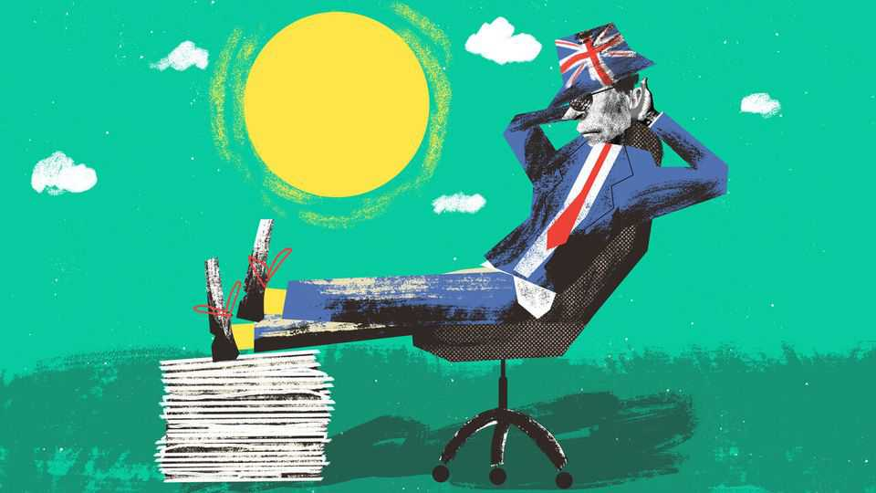

The Great British Bunk Off
How the British summer holidays offer the worst of all worlds

Aug 20th 2026
August in England is a strange affair. Offices are half-empty but the cities themselves are not. Parks are strewn with the working-age, lazing in the sun; bars fill from the early afternoon. On a warm Friday, anyone hoping for a dip at Canary Wharf’s new outdoor pool is out of luck. Every session is rammed with working-age adults enjoying Britain’s new Mediterranean climate. The Great British Bunk Off has begun.
Britain does not shut down over summer. There is no equivalent of the grandes vacances in France during the height of summer or Norway’s Fellesferie when the entire country disappears for most of July. The closest Britain comes is “holibobs”—a week or two in Europe or Cornwall. Yet for the rest of August, while their peers in France and Germany are away from their desks, Britain’s holibourgeoisie are stuck in purgatory, neither truly at work nor at rest. All that results is an epidemic of skiving and shirking.
It is a British malaise. Britons are inveterate liars when it comes to how much they work. A decade ago statisticians found that a big chunk of Britain’s hourly productivity gap with France was due to Britons vastly overstating how many hours they did. Heat makes them only more deceitful. During summer, about half of British workers confess they clock off early or take extended lunch breaks, according to a survey by Dayforce, an hr-software firm.
And who can blame them? Productive work becomes close to impossible in summer. Co-ordination falls apart. Any request is met with a flurry of out-of-office emails. Some professions such as mps and judges are Augustocrats able to take the whole month off. Schools shut so teachers can enjoy six weeks off. This has a knock-on impact. Four in ten working parents combine working from home with child care, according to the Trades Union Congress, a federation of unions. Arriving emails compete for attention with screaming six-year-olds. The result? More bunking off.
Partly it is culture struggling to keep up with the climate. Mild temperatures have long meant that Britons soldier on through the summer, while continental Europe hits the beach. Climate-change deniers are rare but summer deniers are common. Some still do not accept that Britain is a hot country, for a few months at least. And heat makes people listless: each degree above 20°C knocks about 2% off productivity. Almost all the European countries Britain compares itself with are more productive. If searching for a solution, start with Britain’s summer.
It was not always this way. Britons once enjoyed a rigid separation between work and rest. During “wakes weeks” in the 19th and early 20th centuries, mills would fall silent for a break in summer and the inhabitants of Rochdale and Bury would descend en masse to Blackpool, a seaside resort in England’s chilly north-west.
Today the lines are blurred. In Greater Manchester, mills that once contained looms are now filled with digital admen firing off emails that could be sent from anywhere. And so people do. Britons work from home for about 1.8 days per week, which is far more than in most European countries. In France the average is half that, according to one paper. Turning two days a week into four or five during August is easy. Maintaining motivation in a sweltering attic office while messages pile up is hard.
In another sense it is a return. Before the Industrial Revolution, working patterns were ragged, argued the historian E.P. Thompson. One poet summed up the working week in 1639: “You know that Munday is Sundayes brother/Tuesday is such another/Wednesday you must go to Church and pray/Thursday is half-holiday/On Friday it is too late to begin to spin/The Saturday is half-holiday agen.” Strip out the trips to church and a 17th-century satire is a fair summary of August working in 2026.
Employers can fight back. Technology that liberates workers from their commutes on Fridays can capture their holiday in August, points out Nick Bloom, an economist from Stanford. And so the front line of the fight between labour and capital is now the sun lounger rather than a factory floor. A leisurely backstroke at 3pm in Canary Wharf on a hot August weekday becomes a wet wildcat strike; a manager emailing an underling they know is on the beach is the equivalent of a Victorian mill owner fiddling the clocks to shorten a break.
Who can bring peace to this struggle? Politicians show little interest. They once promised leisure: in 2017 Jeremy Corbyn’s Labour Party proposed four new bank holidays. Interest rates were zero and money was free, so why shouldn’t time be? Now no major party bothers. Labour’s sweeping Employment Rights Act had little to say on holidays; the government chickened out of a “right to switch off”, which would have made it harder for companies to contact staff out of hours.
The Great British Bunk Off could be a solution rather than a scandal. Skiving is perhaps a necessary pressure valve for the labour market, allowing it to clear. If workers actually worked the hours, would companies be happy to offer a pay rise (plus a little extra for child care)? The Great British Bunk Off becomes a Soviet compromise: “We pretend to work, and they pretend to pay us.”
Joining the rest of Europe and embracing an actual shutdown would be a gamble, a bet that Parkinson’s law—the idea that “work expands so as to fill the time available for its completion”—is a fundamental rule of economics, rather than a joke. Telling people to knuckle down is no more appealing. One cabinet minister suggests that if Britain wants to survive, it should consider a six-day week, rather than a four-day one. It would be a brave politician to pitch it. And so the Great British Bunk Off will remain a summer fixture, best observed from a berth at the lido or horizontally in a park. Good luck finding a spot.■